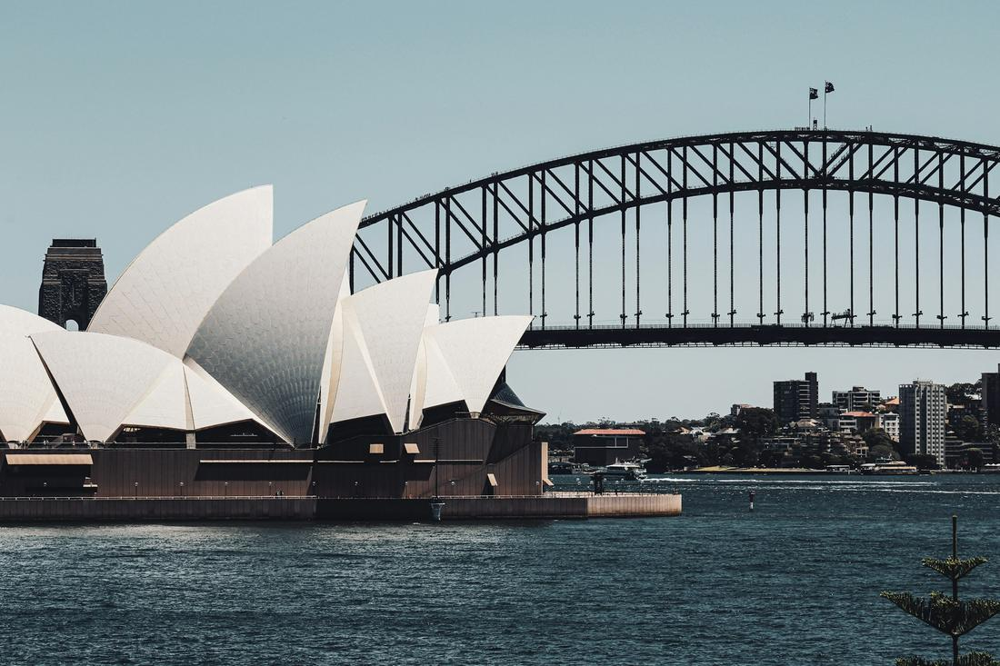
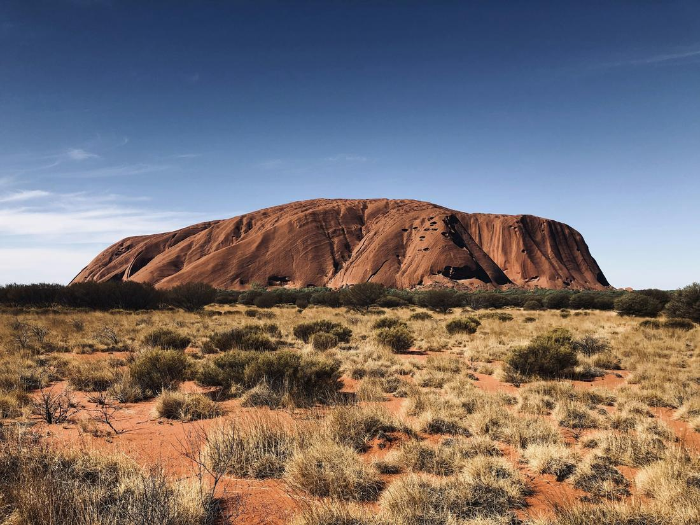

Coral reefs, red desert, and a harbor skyline you've seen in a thousand postcards.
Australia is a country I love selling because it genuinely has something for every kind of traveler on your list. You could be snorkeling above the Great Barrier Reef in the morning and standing in front of the Sydney Opera House by dinner — and that's before we even get to the otherworldly red desert of the Outback. It's enormous, it's diverse, and it rewards travelers who are willing to fly a bit between destinations.
I always tell clients that Australia isn't a place you 'do' in a week — it's a place where you choose a few unforgettable regions and build your trip around them. The reef, the harbor cities, and the ancient desert heart of the country are three completely different versions of Australia, and each one genuinely deserves its own dedicated days rather than a rushed drive-by.
As your travel advisor, here's exactly how I'd build out an Australia itinerary — here are 3 excursions I love arranging.

Based out of Cairns or the slightly quieter Port Douglas, this package pairs two of Australia's most iconic natural wonders in one trip. Your day out on the water takes you to the outer edges of the Great Barrier Reef, where a pontoon or dive boat gives you access to snorkeling and diving among coral gardens, reef sharks, and sea turtles in some of the clearest water you'll ever swim in. On land, we head into the Daintree, the oldest continually surviving rainforest on Earth, where a ride on the Skyrail Rainforest Cableway carries you above the tree canopy for sweeping views before dropping you into Kuranda village for its markets and galleries. Along the way, we'll stop at Mossman Gorge to cool off in crystal-clear granite pools fed by rainforest streams. This is the package I build for clients who want their 'nature day' in Australia to actually deliver two entirely different ecosystems rather than just one, and it works beautifully as either a single jam-packed day or spread across two more relaxed ones.

This is the package I build for first-time visitors to Australia who want to check off the icons properly, without it feeling like a rushed checklist. In the city, that means climbing the Sydney Harbour Bridge for 360-degree views, touring inside the Sydney Opera House, and walking the clifftop Bondi to Coogee Coastal Walk past some of the most famous beaches in the world. We'll also work in a harbor ferry ride past Taronga Zoo, one of the best-value views in the entire city. Then we head inland to the Blue Mountains, where the Three Sisters rock formation and the Scenic World cable cars and railway give you sweeping views over blue-tinted eucalyptus forest that genuinely earns the region's name. It's the kind of day that mixes urban icons with total natural drama, and it's consistently one of the most requested packages I put together for clients landing in Sydney for the first time.

There's a stillness to the Australian Outback that I have a hard time putting into words, and this package is designed to give you time to actually feel it rather than just photograph it and move on. We'll watch Uluru change color at sunset from a dedicated viewing area, then return another day for sunrise before walking its base with an Aboriginal guide who shares the site's deep cultural significance to the local Anangu people. Nearby, the Valley of the Winds walk takes you through the towering domes of Kata Tjuta, a hike I recommend to anyone reasonably fit, since the views are unlike anything else in the package. If your dates align, an evening at the Field of Light art installation, over 50,000 solar-powered lights spread across the desert floor, is one of the most quietly magical experiences I've ever booked for a client. For travelers with an extra day, the rim walk at Kings Canyon rounds out the Red Centre beautifully.
Prefer to plan together? I'll build your custom package. Already know what you want? Book instantly through my travel portal.